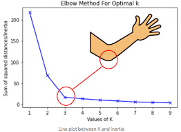

Silhouette Method. Use Median Centroid Method
How to Utilize K-means Clustering for Anomaly Detection in Python
For my Senior Project this semester, I need to be able to leverage machine learning to aid in anomaly detection for a company. My assigned method was K-means learning and this article is going to explain how I’ve used it and how it can be used in general to help with anomaly detection across any data industry

The Power of K-Means in Anomaly Detection
Clustering itself is a process where we segment the data or group it to create meaningful groups that help us in machine learning or in analyzing the data or in detecting outliers. However, K-means clustering extends beyond normal data clustering—especially when it comes to identifying anomalies in datasets. But what makes K-means excel at this task?
K-Means seeks to create clusters where data points are like one another. Anomalies are different from the majority of data points. When using K-Means for anomaly detection, you typically have one or two main cluster representing normal data and one or more smaller clusters representing anomalies. We can identify the smaller clusters as anomalous data because it doesn’t fit into our bigger main data clusters.
Here’s a generic guide on how I used clustering for the project that I am working on:
- Data Familiarization: Started with a csv file and identified the feature columns I needed to use as well as my target column I would use to see if the groupings were meaningful.
- Data Standardization: K-means Clustering requires the data that we feed into it to be in numerical format and not to have any null values. I also applied a z-score function to all the features I was using from the scipy.stats function to standardize the data it was using.
- Determine number of Clusters: Applying the elbow method, we determine the ideal number of clusters that should be used based off the features we are using. Based off the chart we produce we look at where the “elbow” is to state the number of clusters we want to use in our clustering of the data. In the example below we would obviously use 3 as the number of our clusters
inertias = []
for i in range(1,10):
kmeans = KMeans(n_clusters=i)
kmeans.fit(allclusterdata)
inertias.append(kmeans.inertia_)
plt.plot(range(1,10), inertias, marker='o')
plt.title('Elbow method')
plt.xlabel('Number of clusters')
plt.ylabel('Inertia')
plt.show()- Cluster Assignment: I ran the algorithm that applies the K-means clustering and where we set the number of clusters we want. The code is also shown below:
kmeans = KMeans(n_clusters=3)
kmeans.fit(allclusterdata)- Interpretation of Results: Now I used the labels that the K-means clustering creates, labeled my data with it, and then checked to see what proportion of each of the clusters had “true” as their label in my target column and saw if there were any meaningful results or percentages where one group had a higher percentage of labeled anomaly data in it than the others. Thankfully, the clustering created a cluster that had ONLY my data labeled as being anomalous in it, which should be helpful in applying to other data that we have. The code below shows how to put our cluster labels onto our original data set:
labels = kmeans.labels_
interview_data["clusters"] = labels.tolist()Some Real-World Applications
As stated in the beginning, anomaly detection using K-Means clustering has a wide range of real-world applications. Some of them are listed below:
Network Security Detecting unusual patterns in network traffic to identify potential cyber threats and intrusions.
Fraud Detection Identifying fraudulent financial transactions or activities by spotting unusual patterns.
Industrial Equipment Monitoring Monitoring the health of industrial machinery by detecting anomalies in sensor data.
Quality Control Checking for defects or anomalies in manufactured products on the production line.
Healthcare Identifying unusual medical conditions or patient behaviors in healthcare datasets.
Conclusion
K-Means clustering, while primarily known for its clustering capabilities, is a valuable tool for anomaly detection. Its ability to distinguish normal data from anomalies can be harnessed in various domains to improve security, efficiency, and decision-making processes. By mastering K-Means for anomaly detection, you can enhance your ability to detect and address exceptional cases within your data.